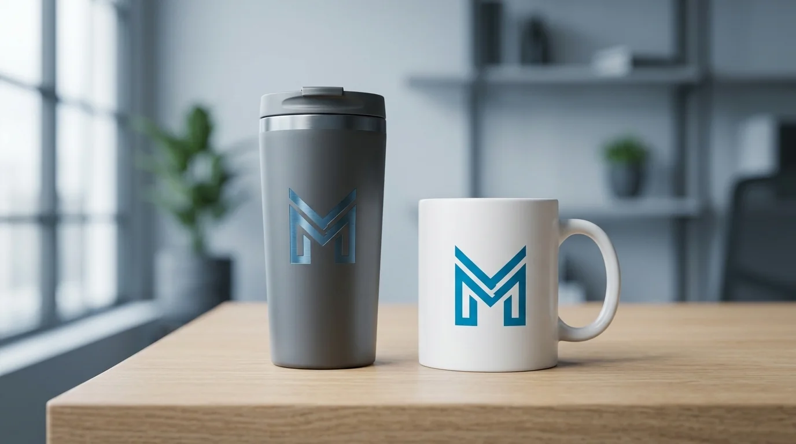

Campaign marketing yang melibatkan interaksi langsung dengan audiens, seperti gathering, seminar, atau aktivasi produk, umumnya membutuhkan merchandise promosi sebagai pelengkap yang memperkuat kesan terhadap brand.
Produk Merchandise Promosi untuk Skala Besar
Merchandise promosi skala besar dipilih ketika perusahaan perlu membagikan produk dalam jumlah banyak kepada peserta event tanpa membebani anggaran campaign secara signifikan.
Beberapa produk yang umum dipesan untuk kebutuhan ini:
- Gantungan kunci custom logo untuk goodie bag peserta.
- Notebook kecil custom cover untuk seminar dan workshop.
- Pin custom logo untuk merchandise komunitas.
- Stiker custom logo untuk campaign digital dan offline.
Produk kategori ini memiliki proses produksi yang relatif cepat sehingga cocok untuk kebutuhan event dengan waktu persiapan terbatas.
Merchandise Promosi untuk Kebutuhan Outdoor
Produk yang tahan cuaca dan mudah dibawa menjadi pilihan utama untuk campaign yang dilaksanakan di ruang terbuka, seperti bazaar, pameran, atau aktivasi jalanan.
Pilihan produk yang sesuai antara lain:
- Payung lipat custom logo untuk merchandise musim hujan.
- Topi custom bordir logo untuk aktivasi outdoor.
- Kipas custom logo untuk booth pameran.
- Tote bag kanvas custom untuk goodie bag campaign.
Pemilihan bahan yang tahan lama membantu logo tetap terlihat jelas meski produk digunakan dalam kondisi luar ruangan.
Merchandise Promosi Fungsional untuk Penggunaan Harian
Merchandise yang digunakan setiap hari memberikan eksposur logo yang lebih panjang dibanding produk yang hanya dipakai sekali saat acara berlangsung.

Beberapa contoh produk fungsional yang sering dipilih:
- Tumbler custom logo untuk merchandise campaign berkelanjutan.
- Mug custom desain untuk hampers klien dan mitra.
- Power bank custom logo untuk kebutuhan campaign teknologi.
- Pouch multifungsi custom untuk aksesori kerja sehari-hari.
Produk fungsional ini juga cocok dikombinasikan dengan merchandise skala besar dalam satu paket goodie bag agar kesan campaign lebih maksimal.
"Produk fungsional cocok dikombinasikan dengan merchandise skala besar dalam satu paket goodie bag agar kesan campaign lebih maksimal."
— Erlang Sinatrya, Penulis Merchandise Kantor

Kesimpulan
Merchandise Kantor membantu perusahaan menentukan kombinasi merchandise promosi yang sesuai dengan target audiens, tema campaign, dan anggaran yang tersedia. Hubungi tim Merchandise Kantor untuk konsultasi produk dan pengajuan penawaran harga sesuai kebutuhan campaign Anda.